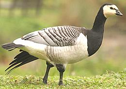
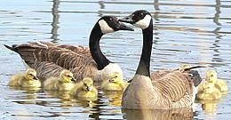
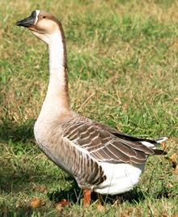
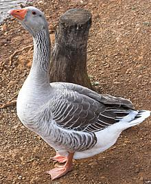
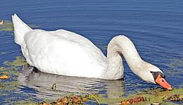
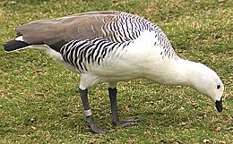

SAFARI
Users
- General & History
- Types of Goose
- Roasting a Goose - complete details and methods for oven roasting.
General & History
The word for "goose" is rooted in the earliest versions of PIE (Proto Indo-European), the language from which English, Latin, Greek, Hindi, Lithuanian and many others descend. Clearly they've been significant to humans for a very long time.
Domesticated geese belong to the genus Anser (Grey Geese) with two main species. In the West they are derived from the Greylag Goose, Anser anser, and in the East from the Chinese or Swan Goose Anser cygnoides. In both groups white varieties have been developed and are preferred in commerce because the skin will be free of dark spots from un-emerged feathers. The true White Goose (genus Chen), is a North American wild goose unrelated to the domestic goose.
In either lineage, domestic geese are remarkably like the wild geese from which they derive, in plumage, strength and fierceness. Geese are complex and interesting critters to have around, but some writers have anthropomorphized them without mercy. They are geese and their behavior must be interpreted as goose-like, not human-like.
Geese are hated by golfers for adding gooey hazards around the already annoying water hazards. Geese love golf courses.
Types of Geese
Barnacle Goose
 [Branta leucopsis]
This wild goose has an interesting place in European history. Since
no one had ever seen a baby barnacle goose or an egg (they breed in the
Arctic), the story got invented that they were actually the mature form
of the Goose Barnacle which
they were thought to resemble. One cleric even claimed to have seen one
convert from a barnacle to a goose. For this reason they were classified
as fish, not as fowl, and the church allowed them to be eaten on meatless
days.
Photo © i0025
.
Canada Goose
 [Branta canadensis]
This is the most well know wild goose in North America. Previously overhunted, most subspecies are now recovering due to strict game laws. They are migratory, spending the summers in Canada and Alaska and the winters in the USA. They are particularly fond of golf courses, for which reason golfers hate them intensely. They are present year round along the USA / Canada border.
Caution: These geese are very strong and rather fierce. If
they want your lunch they will take it from you. Best to appreciate them
from a safe distance.
Photo © i0029
.
Chinese Swan Goose
 [Anser cygnoides]
The Chinese goose is easily identifiable by the big lump in the forehead where
it joins the beak. These geese are now widely raised in the West as well
as in China. They are somewhat smaller than the European goose and in my
experience a lot less fierce. There are both brown and all white varieties
in domestic flocks.
Photo © i0028
.
Greylag Goose - Domestic Goose

[Anser anser]
The European domesticated goose is descended from the wild Greylag Goose and
remains much the same in appearance and disposition. There are now quite a
number of named varieties of this goose varying in size and plumage including
some that are all white. Caution: these geese are very strong and
they'll go quite out of their way for a chance to bite you. They bite
hard, and while they have hold of you they'll beat you black and blue
with their elbows. Very territorial they are, and their territory is
wherever they happen to be at the moment.
Photo © i0026
.
Swan
 [Genus Cygnus various species]
Most Northern Hemisphere swans are all white or nearly so, Southern Hemisphere
swans are available in a number of color schemes (except all white) including
the New Zealand black swan. They are generally larger than geese, have
longer necks and don't venture onto land as much. They are mostly decorative
and no longer much eaten in Europe or North America due to the lynch mobs that
would form if people knew you were eating swans.
Photo © i0024.
Upland Goose
 [Magellan Goose, Chloephaga picta]
This is the most common goose in South America and the Falkland Islands - a
wild goose that's not been domesticated. Upland Geese come in several very
different color schemes and can be found far inland where they are not
appreciated by sheep and cattle ranchers due to large flocks feeding on
the pastures. Studies have shown, though, that they are more beneficial
than damaging.
Photo © ???.